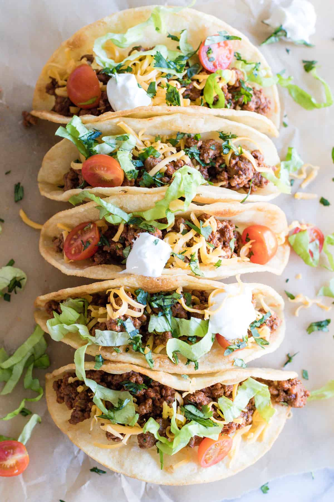

Hunter Favorite Recipes
Peperino Pizza

| Ingredients |
Directions |
| 1 1/2 cups (355 ml) warm water (105°F-115°F) |
Spoon tomato-and-basil pasta sauce evenly over crust, leaving a 1-inch border around edges. |
| 1 package (2 1/4 teaspoons) of active dry yeast |
Top with half of pepperoni slices. |
| 3 3/4 cups (490 g) bread flour |
Sprinkle with cheese. Top with remaining pepperoni. |
| 2 tablespoons extra virgin olive oil (omit if cooking pizza in a wood-fired pizza oven) |
Bake pizza at 450° directly on oven rack 11 to 12 minutes or until crust is golden and cheese is melted |
| 2 teaspoons salt |
Cut into 6 slices. Serve immediately. |
| 1 teaspoon sugar |
|
The original recipe can be found click here
Tacos

| Directions |
Ingredients |
| 1 tablespoon olive oil |
Preheat the oven to 325 degrees F. |
| 1/2 yellow onion, diced |
For the beef: In a skillet over medium-high heat, add the olive oil and onions. |
| 2 pounds ground beef |
Cook until starting to soften, then add the ground beef |
| 1/2 teaspoon chili powder |
Cook the meat until it's totally browned, then drain the fat. |
| 1/2 teaspoon cumin |
Add the chili powder, cumin, paprika, salt, black pepper and crushed red pepper and stir to combine. |
| 1/2 teaspoon paprika |
Add 1/2 cup hot water and stir. Reduce the heat to low and simmer for 15 minutes. |
| 1/2 teaspoon salt |
For the fixins: Meanwhile, wrap the flour tortillas in foil and warm in the oven for 20 to 25 minutes |
| 1/2 teaspoon ground black pepper |
Right before serving, crisp the taco shells in the oven according to package instructions. |
| 1/4 teaspoon crushed red pepper |
Serve with the grated cheese, diced tomatoes and shredded lettuce. |
| Taco shells |
|
The original recipe can be found click here
Breakfast Burritos

| Directions |
Igredients |
| 1 tbsp (15 mL) green pepper, diced |
Coat a medium skillet with non-fat cooking spray. Heat over high heat. |
| 1 tbsp (15 mL) green onion, chopped |
Add pepper and onion to skillet. Sauté 2-3 minutes, or until vegetables start to soften. |
| 1 cup (250 mL) egg substitute |
Pour egg substitute into skillet, distributing evenly. Sprinkle with Lite salt. |
| ¼ tsp (1 mL) lite salt |
Once eggs are cooked through, turn down heat, add tomatoes, and cook for 1 minute until tomatoes are warm. |
| 1 - 6inch whole wheat tortilla |
Place egg in middle of tortilla and top with cheese. |
| 2 oz (60 g) reduced-fat pepper jack cheese |
Roll tortilla into a burrito. |
French Toast

| Directions |
Ingredients |
| 1 egg |
Beat egg, vanilla and cinnamon in shallow dish. Stir in milk. |
| 1 teaspoon |
Dip bread in egg mixture, turning to coat both sides evenly. |
| 1/2 teaspoon |
Cook bread slices on lightly greased nonstick griddle or skillet on medium heat until browned on both sides. Serve with Easy Spiced Syrup (recipe follows), if desired. |
| 1/4 cup milk |
|
| 4 slices bread |
|
Chocolate

| Directions |
Igredients |
| 1 cup butter, softened |
Preheat oven to 350 degrees F (175 degrees C). |
| 1 cup packed brown sugar |
Cream together the butter, white sugar, and brown sugar until smooth. Beat in the eggs one at a time, then stir in the vanilla. |
| 2 eggs |
Dissolve baking soda in hot water. Add to batter along with salt. Stir in flour, chocolate chips, and nuts. Drop by large spoonfuls onto ungreased pans. |
| 2 teaspoons vanilla extract |
Bake for about 10 minutes in the preheated oven, or until edges are nicely browned. |
| 1 teaspoon baking soda |
|
| 2 teaspoons hot water |
|
| 1/2 teaspoon salt |
|
| 3 cups all-purpose flour |
|
| 2 cups semisweet chocolate chips |
|